How to read your site dashboard — in five minutes
The dashboard shows how your SharePoint site is consumed: how much traffic it gets, who reads it, how new content performs over its lifetime, and whether your audience keeps coming back. It runs entirely in your browser on one Parquet extract of your site's page views.
Set the analysis window
The header controls the time window for everything on all three tabs. Use the presets (30d / 90d / YTD / 12mo / All) or pick a custom from – to range; the Language filter restricts every number to one content language (derived from the page URL). The green Ready dot confirms all sections rendered; Export XLSX writes the tables and KPIs of all tabs into one corporate-formatted Excel workbook.
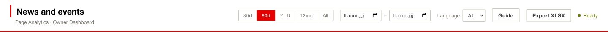
Every KPI compares the selected window against the prior equal-length period — the ▲/▼ deltas below the numbers. Three tabs organise the analysis: Overview (traffic and pages), Content Lifecycle (how content earns its reach) and Audience & Sessions (who comes, and how they behave).
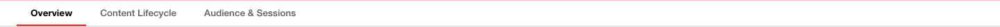
Read the headline numbers
The Overview opens with themed KPI groups — the headline number of every domain on one line, before you open its tab. A rate is only as interesting as the counts behind it, so always read both.
- Reach — Page Views, Visits, Unique Visitors and Views/Visit: how much traffic, in how many sessions, from how many people.
- Engagement — Engagement (unique ÷ visits), Avg. Session, Pages/Session and Bounce Rate: do people spend time, and how deep do they go?
- Audience — New Visitors, Returning Share, Visits/Visitor: is the readership growing or the same people coming back?
- Actions — Clicks, Downloads, CTR, Clicker Rate (shown when interaction data is loaded): does the content make people act?
- Content — Pages Viewed, Languages, Pages Published (with publishing dates): how much content carries the traffic?
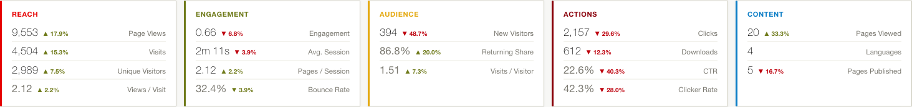
Follow the traffic over time
Traffic over time shows monthly bars for the full history — the selected window is emphasised in dark grey, the rest stays as light-grey context, so a "good" quarter is always judged against what came before. Toggle between Visits and Unique to separate activity growth from audience growth.
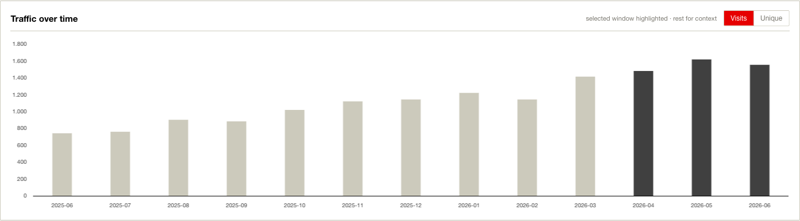
Know your audience mix
Audience by Division splits visits by the reader's HR division — it answers whether your site reaches the whole organisation or one silo. It needs the optional HR enrichment at build time; without it the card explains what is missing instead of guessing.
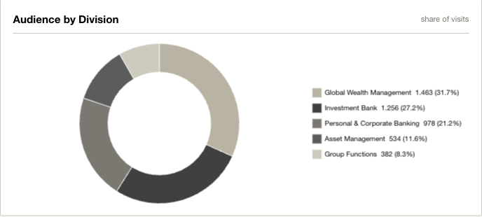
Content Type shows what kind of content carries the traffic — articles, videos, downloads. A download-heavy mix means your site is used as a reference archive; an article-heavy mix means it is read as news.
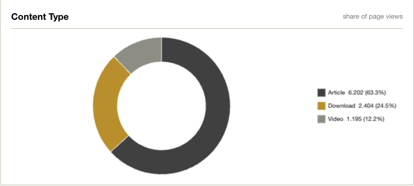
Rank your pages
Top & Bottom Pages shows the 5 strongest and 5 weakest pages side by side — switch the ranking metric (Visits, Page Views, Unique Visitors, Engagement, Avg time on page) to ask different questions. A page high on views but low on avg time is being opened and abandoned.
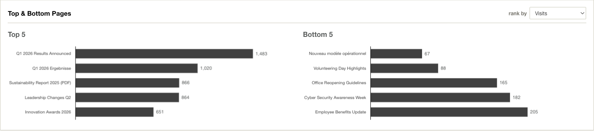
The Pages table lists every page with views, visits, unique visitors, engagement, avg time, a weekly trend sparkline and the MoM delta. Click any column header to sort — sorting by MoM surfaces the risers and fallers instantly.
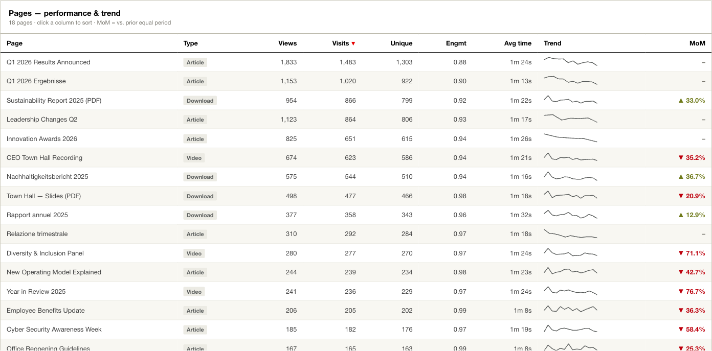
See how content earns its reach
The Content Lifecycle tab needs a publish date per page (from PublishingDate in the export). Its KPIs: pages published in the window, the Median 1st-Week Reach, and how the traffic splits between fresh and evergreen content.
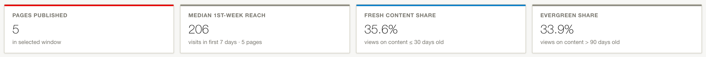
Content decay shows the average daily views a page gets on each day after publication — the shape every news site has: a launch burst, a fast decay over the first two weeks, then a long tail. The curve is exposure-normalised, so a page published late in the window doesn't distort the old-age buckets. Read it to decide how long a story stays on the homepage: once the curve flattens, the slot is better spent on the next story.
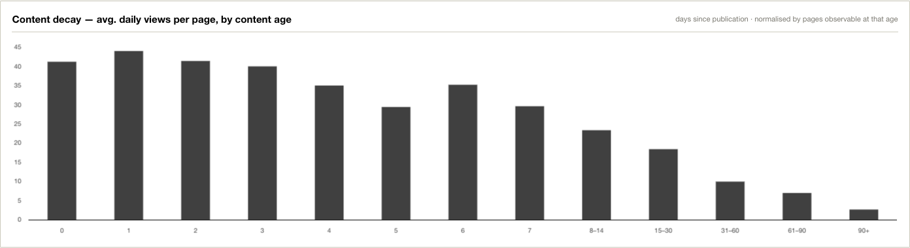
Publishing cadence vs. earned traffic overlays monthly views (split into fresh ≤ 30d, dark, vs. older content, light) with the number of pages published (bronze line, right axis). If the dark share shrinks while publishing stays flat, new content is underperforming; if total traffic holds while publishing drops, the archive is carrying the site.
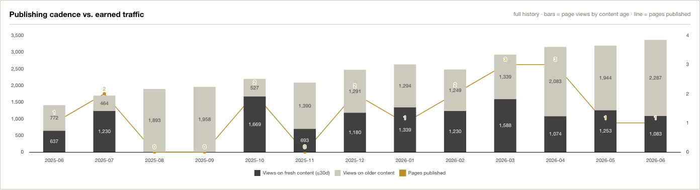
The Published pages table gives the per-page view: publish date, age, first-7-day visits, the 7d share and visits in the current window. Sort by First 7d to compare launches; a high 7d share with few window visits marks a story that flared and died.
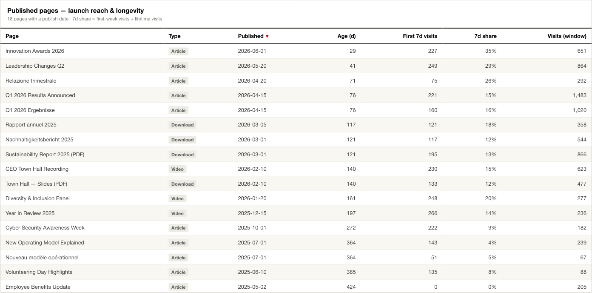
Understand loyalty…
The Audience & Sessions tab answers "do people come back?". Its KPIs: New Visitors, Returning Share, Bounce Rate (note: its delta colours are inverted — a falling bounce rate is shown green), Pages / Session and Visits / Visitor.
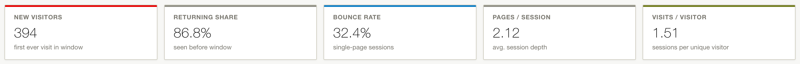
New vs. returning visitors stacks both groups per month over the full history. A healthy site converts the light segment (new) into the dark base (returning) over time — a base that stops growing while new stays high means visitors sample the site once and don't return.
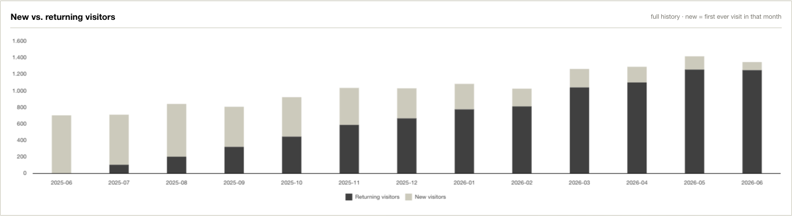
Visit frequency distributes visitors by how often they came in the window (1 / 2 / 3–5 / 6–10 / 10+ visits) — the direct measure of habit.
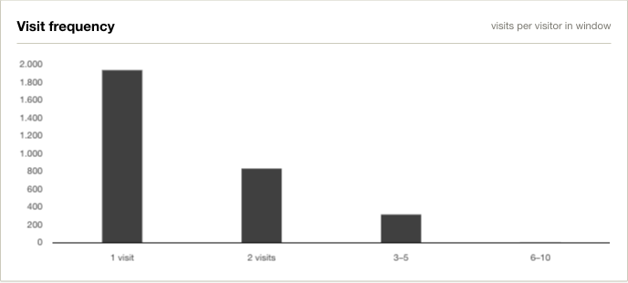
…and how sessions move through the site
Session depth distributes sessions by pages viewed (1 / 2 / 3–5 / 6+). The 1-page bar is your bounce volume; everything to its right is journeys.
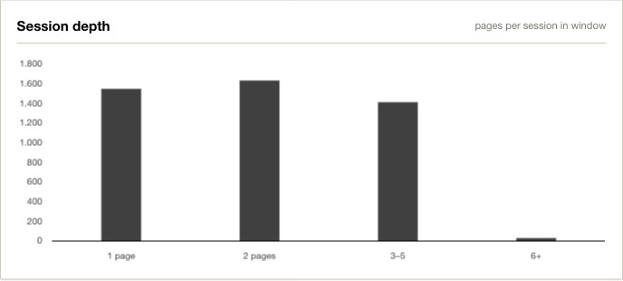
The Entry pages table shows where sessions start — which is often not your top page. Each entry page lists its entries, share, bounce rate and average session depth. An entry page with a high bounce rate is a dead end: readers land there (from a link, an email, search) and leave without touching the rest of the site — fix it with related-content links.
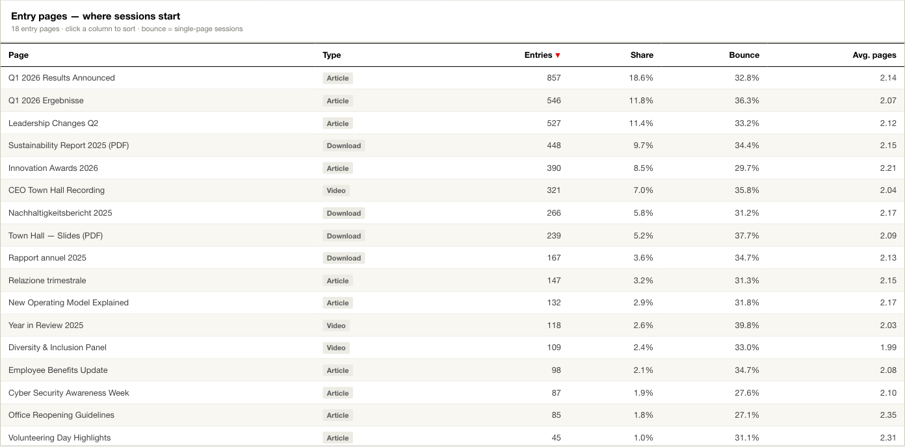
Glossary
- Page Views
- Total page loads in the window. One person re-opening a page counts each time.
- Page Visits (Sessions)
- Distinct browsing sessions with at least one page view. One visitor can have many sessions.
- Unique Visitors
- Distinct people in the window, counted via the telemetry user identifier. This is a device-based identifier — one person on two devices counts twice, so treat it as an upper bound on distinct employees.
- Avg. Session
- Mean engaged time per session, from the per-page time-on-page (gap to the next page view, capped at 30 minutes; the last page of a session has no measurable time). AVG(Σ time-on-page per session)
- Engagement
- Breadth of the audience relative to activity: 1.0 means every visit came from a different person; low values mean few people visiting often. Unique Visitors ÷ Visits
- MoM
- Change vs. the prior equal-length period, as a percentage. Shown per page in the Pages table and under every KPI.
- Prior equal-length period
- The window immediately before the selected one, with the same length (e.g. 90d selected → compared against the 90d before it). "All" has no prior period, so deltas show "–".
- Language
- Content language derived from the page URL segment (/en/ /de/ /fr/ /it/ → EN/DE/FR/IT, anything else → Other). The filter applies to every number on every tab.
- Publish date
- From the page's PublishingDate property in the telemetry. Pages without it are excluded from the Lifecycle tab (and counted as "older" in the cadence chart); if no page has one, the tab shows an empty state.
- First-7-day visits / Median 1st-Week Reach
- Visits a page collects in the 7 days after its publish date — the standard launch metric. The KPI takes the median over pages published in the window whose first week is fully observable (no partial weeks, no survivor bias).
- Fresh Content Share
- Share of page views (with a known publish date) landing on content that was ≤ 30 days old at view time.
- Evergreen Share
- Share of page views landing on content > 90 days old at view time — the archive's contribution.
- Exposure-normalised
- The decay chart divides the views in each age bucket by the number of page-days observable at that age inside the window — so a page published 10 days before the window's end cannot drag down the 30-day bucket it never reached. views ÷ observable page-days
- New Visitor
- A visitor whose first-ever visit (in the whole dataset, within the current language scope) falls inside the selected window. Early months of the data history over-count "new" — nobody can be older than the data.
- Returning Share
- Share of the window's visitors who were already seen before the window started. 1 − New ÷ Visitors
- Bounce Rate
- Share of sessions that end after a single page view. Falling is good — the KPI's delta colours are inverted accordingly. 1-page sessions ÷ sessions
- Entry Page
- The first page of a session (earliest page view). The entry-page table aggregates sessions by where they started — entries, share of all sessions, bounce rate and average depth from that entry.
- Pages / Session
- Average session depth. Page Views ÷ Sessions
- Visits / Visitor
- Average visit frequency in the window. Sessions ÷ Unique Visitors
- Timezone
- All timestamps are Central European Time (CET/CEST), converted from UTC in the build pipeline.
- Division / HR enrichment
- The Audience-by-Division donut joins each view to the reader's HR division (temporal join on the personnel record). It requires the optional --hr build flag; without it the card shows a hint instead.
- Reference date
- The newest timestamp in the data — presets (30d/90d/…) count back from it, not from today. A stale extract therefore never silently shows an empty "last 30 days".
- One site per file
- The dashboard shows exactly one SharePoint site — the KQL export is scoped by page URL. For another site, run the export + build again; the dashboard file itself is reusable unchanged.